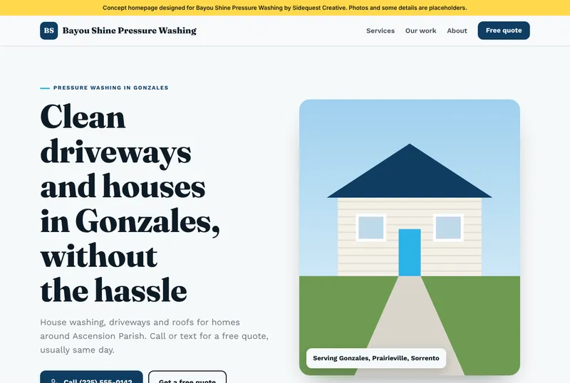
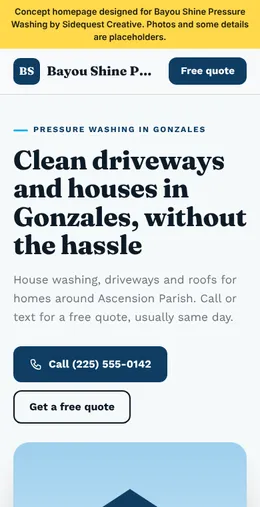
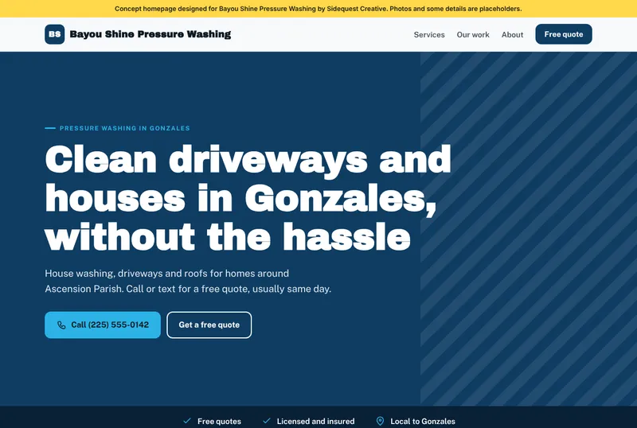
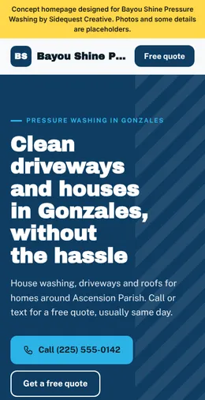
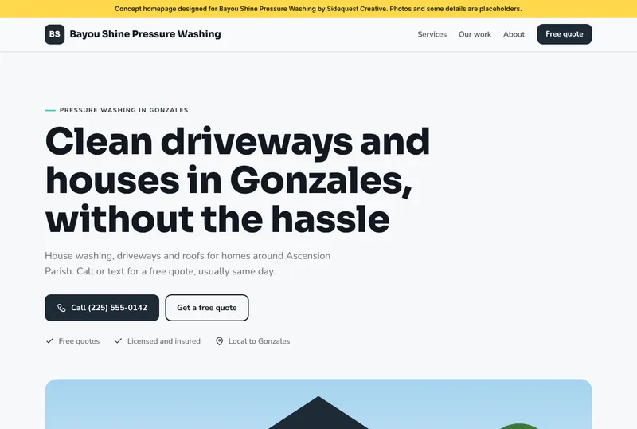
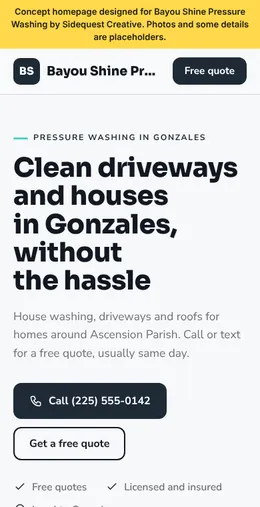
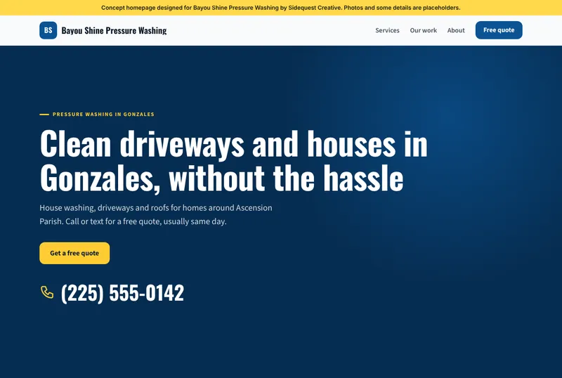
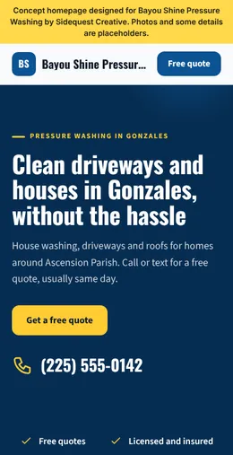

Split split


Headline beside a big photo of their work. Best when they have one strong job photo.
Every mockup and client site is rendered from this kit. The agent writes only the facts and short copy for a business; the kit handles the layout, colors, fonts, icons and phone layout. Each build has to pass two quality checks before it can be deployed.
Picked per business so two neighbors never get the same look. Colors come from the niche, or from their logo when it has usable colors. These previews use a made-up sample business.
split

Headline beside a big photo of their work. Best when they have one strong job photo.
banner

Full color band in their brand color, photo faded behind. Loud and simple.
editorial

Clean type first, wide photo under it. Suits cleaning, painting and window crews.
bold

Dark hero with the phone number huge. Works with no photos at all.